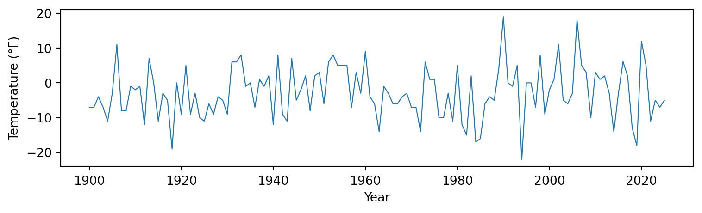
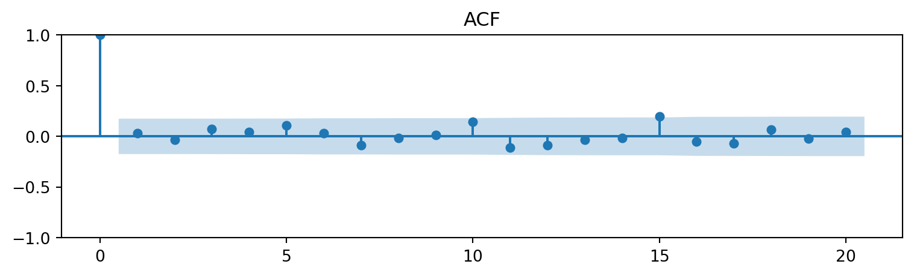
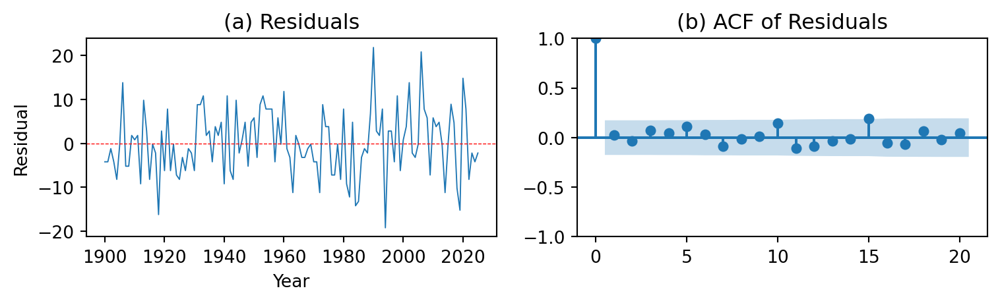
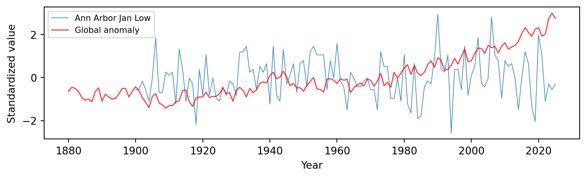

ARMA Analysis of Ann Arbor January Low Temperatures
Abstract
We analyze the Ann Arbor, Michigan January lowest temperature time series spanning 1900–2025 (126 observations, one missing in 1955). We perform analysis including sample autocorrelation and partial autocorrelation functions, fit a range of ARMA(p,q) models for \(p = 0,\dots,4\) and \(q = 0,\dots,5\), and select the best model via the Akaike Information Criterion (AIC). We also investigate linear trend and compare with global temperature anomalies. The AIC analysis suggests that the series is well-described by a low-order ARMA model, and we perform residual diagnostics to validate our chosen specification.
1 Introduction
The Ann Arbor, Michigan January lowest temperature series records the coldest temperature (in degrees Fahrenheit) observed during each January from 1900 to 2025 (Ionides 2026). Understanding the temporal structure of local climate extremes is important both for climate science and for practical planning. A natural question is whether these annual minimum temperatures follows any systematic trend, or whether they behave essentially as independent random fluctuations.
We apply autoregressive moving average (ARMA) models (Shumway and Stoffer 2017) to investigate temporal dependence, and performed Akaike Information Criterion (AIC). We also explore whether a linear trend is present and compare the local Ann Arbor record with global temperature to place the results in a broader climate context.
The data consist of 126 annual observations with one missing value in 1955, which we handle via linear interpolation.
2 Data Analysis
Figure 1 shows the January lowest temperature in Ann Arbor from 1900 to 2025. The series fluctuates substantially from year to year, ranging from about \(-22^\circ\)F (1994) to \(+19^\circ\)F (1990).
The sample mean is -2.8 °F with a standard deviation of 7.5 °F. Figure 2 displays the sample autocorrelation function (ACF). Most lags fall within the 95% confidence bands, suggesting that temperature each year is independent.

We also apply the ADF test to validate stationarity.
The ADF test statistic is -10.78 with a \(p\)-value of 0.0000, which provides evidence that the series is stationary. Base on this, the data is well fitted on a ARMA model without further differencing.
3 Methods
3.1 ARMA Model Specification
We model the January low temperature series \(\{Y_n : n = 1, \dots, N\}\) as an ARMA(\(p,q\)) process. Using the backshift operator \(B\), we present the model as \[ \phi(B)(Y_n - \mu) = \theta(B)\,\epsilon_n, \tag{1}\] where \(\{\epsilon_n\}\) is a white noise process with \(\epsilon_n \sim \text{i.i.d. } N(0, \sigma^2)\), \(\mu = \text{E}[Y_n]\), and \[ \begin{aligned} \phi(x) &= 1 - \phi_1 x - \cdots - \phi_p x^p, \\ \theta(x) &= 1 + \theta_1 x + \cdots + \theta_q x^q. \end{aligned} \tag{2}\] Here \(\phi_1, \dots, \phi_p\) are the autoregressive (AR) coefficients and \(\theta_1, \dots, \theta_q\) are the moving average (MA) coefficients.
3.2 Model Selection via AIC
We select the model order using AIC: \[ \text{AIC} = -2 \ell(\hat{\theta}) + 2k, \tag{3}\] where \(\ell(\hat{\theta})\) is the maximized log-likelihood and \(k\) is the number of estimated parameters. We fit ARMA(\(p, q\)) for \(p \in \{0, 1, 2, 3, 4\}\) and \(q \in \{0, 1, 2, 3, 4, 5\}\) and tabulate the resulting AIC values. Lower AIC shows a better trade-off between model fit and complexity.
3.3 Trend Model
Writing the data as \(y_{1:N}\), collected at years \(t_{1:N}\), we consider a linear trend model with AR(1) errors: \[ (1 - \phi_1 B)(Y_n - \mu - \beta t_n) = \epsilon_n, \tag{4}\] where \(\{\epsilon_n\}\) is Gaussian white noise with variance \(\sigma^2\). Our null model is \[ H^{(0)}: \beta = 0, \tag{5}\] and our alternative hypothesis is \[ H^{(1)}: \beta \neq 0. \tag{6}\]
4 Results
4.1 Linear Trend
A linear regression of temperature on year yields a slope of 0.0153 °F/year (\(p\)-value = 0.403), corresponding to a change of about 1.9 °F over the 125-year record.
4.2 AIC Table for ARMA(p,q) Models
| MA0 | MA1 | MA2 | MA3 | MA4 | MA5 | |
|---|---|---|---|---|---|---|
| AR0 | 866.96 | 868.85 | 870.68 | 871.95 | 873.53 | 874.53 |
| AR1 | 868.85 | 870.49 | 872.51 | 873.01 | 874.95 | 876.45 |
| AR2 | 870.72 | 872.36 | 867.92 | 869.24 | 870.63 | 868.52 |
| AR3 | 872.01 | 873.3 | 869.45 | 876.75 | 872.73 | 874.04 |
| AR4 | 873.81 | 875.24 | 877.28 | 872.93 | 871.97 | 874.43 |
The minimum AIC is 866.96, corresponding to the ARMA(0,0) model.
4.3 Diagnostics for the Selected Model
Figure 3 presents diagnostic plots for the ARMA(0,0) model: residual time series and ACF of residuals.

The Ljung–Box test (Ljung and Box 1978) at lags 10, 15, and 20 yields \(p\)-values of 0.742, 0.433, and 0.630, respectively. This indicate no significant residual autocorrelation.
4.4 Comparison with Global Temperature

The global mean temperature anomaly shows a clear upward trend, especially after 1970. The Ann Arbor January low temperature, by contrast, is far more variable and does not track the global signal closely. This is consistent with the expectation that local temperature extremes are dominated by weather variability rather than the smoother global warming signal.
5 Conclusions
Our analysis of the Ann Arbor January lowest temperature series (1900–2025) reveals that the data are consistent with a stationary process. The ADF test confirms stationarity, and the AIC-based model selection identifies ARMA(0, 0) as the best-fitting model.
We found a slope of approximately 0.0153 °F/year through linear trend analysis, which is small relative to the year-to-year variability. The residual diagnostics for the selected model show no significant autocorrelation.
Comparing with the global temperature record reveals that the local Ann Arbor January minimum temperature series is far noisier than the global average. While global temperatures show a clear warming trend, particularly since the 1970s, the Ann Arbor series is dominated by large interannual variability, making any local trend difficult to detect with conventional ARMA modeling. This highlights the distinction between global climate signals and local weather extremes.
Bibliography
Ionides, Edward L. 2026. “STATS 531 (Winter 2026) Course Notes: Analysis of Time Series.” https://ionides.github.io/531w26/.
Ljung, G. M., and G. E. P. Box. 1978. “On a Measure of Lack of Fit in Time Series Models.”
Shumway, Robert H., and David S. Stoffer. 2017. Time Series Analysis and Its Applications: With r Examples.